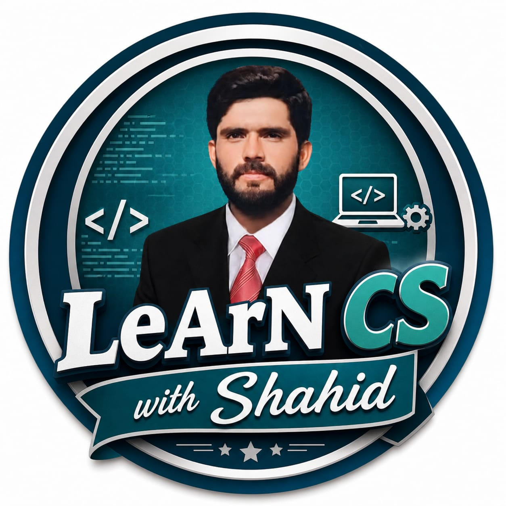

LeArN CS WiTh ShahidComputer Science for Matric, ICS, BSCS and MS | By Shahid Abbas
Punjab Board | New Syllabus | 9 Chapters
Punjab Board | New Syllabus | 8 Chapters
FSc Part-1 | PCTB New Syllabus | 9 Chapters
FSc Part-2 | PCTB New Syllabus
New syllabus ke chapters upload ho rahe hain!